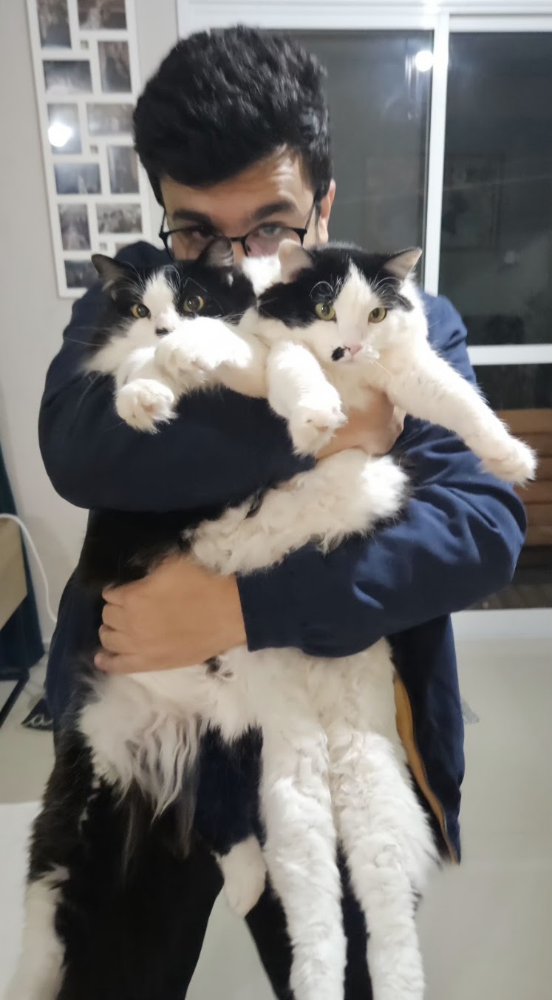

// palestra
Carreira Tech e seu futuro!
Tecnologia, escolhas e o que vem por aí
Mateus Vieira da Assunção
Software Engineer Sr. · Tech Lead @ Itaú Unibanco
01 · quem sou eu
Olá, eu sou o
Mateus Vieira
- Sou aqui de Jacareí
- Fiz o ensino médio na ETEC
- Engenheiro de Controle e Automação · UFLA
- Pós em Arquitetura de Sistemas · FIAP
- Atualmente sou Tech Lead no Itaú Unibanco
Fora do trabalho
- ⚽🏈Futebol e NFL
- 🎮PS, CS...
- 🪚Marcenaria
- 📢Ouvir a prof. Ana Flavia reclamar da bagunça de vocês😍



01 · o começo
Quando comecei a trabalhar?
- 2008 Ensino médio ETEC + SENAI de mecânica de usinagem
- 2011 Faculdade de Engenharia Controle e Automação · UFLA (MG)
- 2013 Carro elétrico e robôs LEGO Projetos na UFLA
- 2014 Iniciação científica Pesquisa na UFLA
- 2016 Estágio no Itaú Unibanco Início da carreira corporativa
02 · o primeiro crachá
2016: como era trabalhar?
Não existia home office
Todo dia no escritório, de crachá no peito
hoje remoto ou híbrido
Eu tinha um telefone fixo na minha mesa
Ramal, recado anotado e “liga de volta depois”
hoje Teams e celular
Não existia IA 😱
Dúvida? Google, colega do lado ou tentativa e erro
hoje IA no dia a dia
02 · itaú unibanco 2016–2021
Meu trabalho e a virada
O que eu fazia
- Trabalhava com projetos e planejamento
- Cresci de estagiário a sênior
- Empresa excelente, com ótimos benefícios
- mas.... eu não estava feliz.
Como resolvi mudar
- Sempre quis trabalhar com tecnologia
- Estudava programação fora do horário
- Virei Scrum Master de um time de tecnologia para ficar mais próximo da área de desenvolvimento
- Me candidatei para muitas vagas internas, mas nâo conseguia atingir os requisitos
Mesmo como Sênior, crescendo rápido e com bons benefícios, resolvi arriscar e aceitei uma oportunidade de trabalhar em outra empresa.
03 · trajetória
Eu mudei a trajetória da minha carreira
- 2016 Projetos e planejamento Itaú Unibanco
- 2020 Scrum Master e Estudo Itaú Unibanco
- 2021 DEV (PJ) Ambev Global Tech
- 2022 Tech Lead Ambev Global Tech
- 2023 Coordenador de Operações Ambev Global Tech
03 · trajetória
Eu mudei a trajetória da minha carreira
- 2016 Projetos e planejamento Itaú Unibanco
- 2020 Scrum Master e Estudo Itaú Unibanco
- 2021 DEV (PJ) Ambev Global Tech
- 2022 Tech Lead Ambev Global Tech
- 2023 Coordenador de Operações Ambev Global Tech
- 2024 Eng. de Software Sr. De volta ao Itaú
- 2026 Tech Lead Itaú Unibanco
E conquistei o espaço que sempre quis.
04 · programar em 2026
Como é desenvolver software hoje?
Programar conversando
Com o Claude Code eu descrevo o que quero; a IA lê o projeto, escreve o código, roda os testes e corrige junto comigo
Agentes autônomos
IAs que recebem uma missão e fazem várias etapas sozinhas: pesquisar, programar, testar e entregar
Nuvem + IA
Sistemas rodando na AWS, em data centers do mundo todo, com o Claude integrado aos apps da empresa
Automações
Tarefa repetitiva vira fluxo automático: e-mails, relatórios e aprovações rodando sozinhos
O humano no comando
A IA faz rápido; a gente decide o que fazer, revisa, testa e se responsabiliza
04 · o trabalho hoje
Como é o meu trabalho hoje?
Meu dia a dia 💼
- Guiar o time nas decisões técnicas
- Revisar código e destravar quem precisa
- Conversar muito: time, áreas e clientes
- Usar IA para ir mais rápido
Tokens limitados... 🪙
- Token = pedacinho de texto que a IA lê ou escreve
- Os planos têm limite: acabou, espera ou paga mais
- Por isso: pedidos claros e tarefas menores
- E saber programar sem IA quando o limite acaba
04 · interação ao vivo
Vamos criar um app agora! 🚀
Crie um app web, em um único arquivo HTML, para os alunos
da nossa escola. A ideia da turma é: [ideia da turma].
O app precisa ter: [funcionalidade escolhida].
Use visual moderno e colorido, funcione bem no celular
e escreva todos os textos em português.05 · perguntas difíceis
Mas e… os problemas da IA?
Meio ambiente
Data centers gigantes gastam muita energia e água para resfriar as máquinas
Energia renovável, modelos mais eficientes e uso consciente
Ela inventa coisas
A IA pode errar com muita confiança, as famosas “alucinações”
Confira sempre: fonte, conta e código
Deepfakes e fake news
Vídeos, áudios e fotos falsos que parecem reais
Desconfie e cheque antes de compartilhar
Privacidade
O que você digita pode ficar guardado e ser usado
Nada de senha, documento ou dado pessoal
Preconceito (viés)
Aprende com dados humanos e pode repetir preconceitos
Olhar crítico e gente diversa criando IA
Pensar por você
Usar só para colar a resposta faz você aprender menos
Use para entender, não para copiar
05 · a bolha e as crises do passado
Mas e… a bolha da IA? É real?
hoje🤖 A bolha da IA
Investimentos gigantes, muitas empresas sem lucro e expectativa enorme.
1999→2000🐛 Bug do milênio
Anos guardados com 2 dígitos: 00 virava 1900. O mundo gastou bilhões corrigindo, e a virada passou.
2000💻 Bolha da internet
Muitas empresas “.com” quebraram… mas a internet ficou.
2008🏦 Crise financeira
Empréstimos que ninguém pagava, o Lehman Brothers quebrou e a crise virou mundial.
05 · então…
Crises vêm e vão. O preparo fica.
- 🚀 Novas tecnologias sempre vão aparecer Internet, smartphone, nuvem, IA… e as que vocês ainda vão inventar
- 😰 O medo e as próprias crises sempre podem ocorrer Bug do milênio, 2008, pandemia, bolha da IA: sempre vai ter a próxima
- 🧘 Portanto, mais importante que se desesperar… Pânico não resolve problema: toda crise que vimos passou
- 📚 …é estudar e se preparar Base forte, curiosidade e aprender a aprender: isso nenhuma crise tira de vocês
Em toda crise, quem estava preparado encontrou uma oportunidade.
// sua vez
Perguntas?
...sobre carreira, faculdade, tecnologia, IA...
// para levar
A história é cíclica
- 2000 Bug do milênio e bolha da internet A internet ficou
- 2008 Crise financeira mundial Bancos se reinventaram
- 2026 IA, energia e bolha? O que vamos construir?
- 20?? Novas tecnologias Novos problemas, e vocês vão resolver
Novas tecnologias surgem, e novos problemas aparecem.
// para levar
O que mais importa: estudar
- Base forte: matemática, lógica e inglês
- Curiosidade: crie projetos, teste, quebre, conserte
- Aproveite ETEC, SENAI, Fatec e universidades públicas
- A tecnologia muda, e quem estuda se prepara para ela
// interação ao vivo
Como ficou nosso app? 🛠️
Abrir o resultadoclaude.ai ↗// fim
Obrigado!
Bora construir o futuro? 🚀
- github @omateusassuncao
- linkedin /in/mateusvassuncao